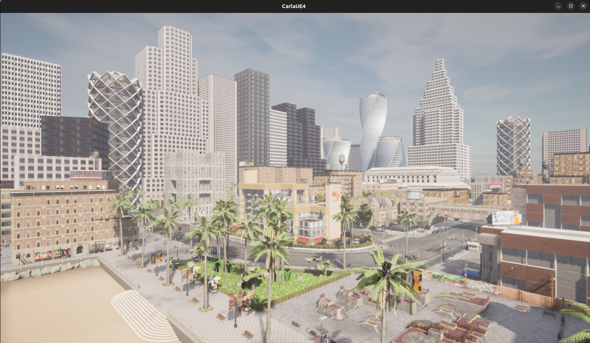

快速启动
本指南演示如何下载并安装 HUTB 的软件包版本。该软件包包含 HUTB 服务器和 HUTB Python 客户端库。
HUTB 的打包版本可让您快速上手使用 HUTB 模拟器。如果您希望修改 HUTB 的引擎代码或为 HUTB 创建自定义地图或资源，则应按照适合您操作系统的说明 从源代码构建 HUTB 。
在你开始之前
安装 Carla 之前应满足以下要求：
- 操作系统。 HUTB 是为 Windows 10 和 11、Ubuntu 22.04 和 24.04 构建的。
- 足够的 GPU。 我们建议使用相当于 NVIDIA 2070 或更高版本的专用 GPU，并且至少具有 8Gb 或更大的 VRAM。
- 磁盘空间。 HUTB 将使用大约 20 GB 的空间。
- 两个 TCP 端口。 默认端口为 2000 和 2001。确保这些端口未被防火墙或任何其他应用程序阻止。
- Python. HUTB API 使用 Python 进行脚本编写。HUTB 在 Linux 上支持 Python 3.7 至 3.12，在 Windows 上支持 Python 3.7 至 3.12。
- Pip. Python 包管理器版本 20.3 或更高版本。
检查你的 PIP 版本：
pip3 -V
如果你需要升级：
# 对于 Python 3
pip3 install --upgrade pip
Carla 安装
下载并解压 HUTB 包
使用下方提供的链接从网盘下载所需的 HUTB 软件包。我们建议下载最新版本的软件包，目前版本号为 2.2 。
此网盘可能包含多个版本的 HUTB。您可以选择下载包含所有最新修复和功能的 当前版本 、之前的版本 以及包含所有开发修复和功能的 夜间版本 （夜间版本可能不稳定，请谨慎使用）。
该软件包是一个以版本号命名的压缩文件。请下载并解压该压缩包，并将其保存到方便的位置（例如home或Documents目录）。
导入额外资产
每个版本都有其自己的附加资产和地图包。此附加包包括地图 Town06 、Town07 和 Town10 。它们单独存储以减少构建的大小，因此只能在安装主包后才能导入它们。
1. 下载 适合您所需版本的 Carla 的软件包。
2. 解压包：
-
在 Linux 上:
- 将包移动到 Import 文件夹并运行以下脚本以提取内容：
cd path/to/carla/root
./ImportAssets.sh
-
在 Windows 上:
- 直接将内容提取到根文件夹中。
安装客户端库
使用 PIP 从 PyPi 安装 Python 客户端库以获取正式发布的版本：
pip3 install hutb
HUTB 软件包的 Python Wheels 也包含在 PythonAPI/carla/dist 中。如果您使用的是从源代码构建的自定义软件包或 CARLA-latest 软件包，则需要安装软件包中包含的 wheels，而不是 PyPi 中的 wheels。在此目录中，使用 PIP 安装相关的 wheels：
cd PythonAPI/carla/dist
pip3 install carla-0.9.15-cp37m-manylinux_2_27_x86_64.whl # 对于使用 Python 3.7 的 CARLA v0.9.15
Python 客户端示例脚本依赖于一些先决条件包，请使用 PythonAPI/examples 目录中的 PIP 安装这些包：
cd PythonAPI/examples
pip3 install -r requirements.txt
运行 HUTB
启动 HUTB 服务端
使用包顶层的启动脚本启动 HUTB 服务器：
- Ubuntu 包：
cd path/to/hutb/root
./CarlaUE4.sh
- Windows 包：
cd path/to/carla/root
CarlaUE4.exe
将会打开一个窗口，其中包含默认城市地图的视图。这是 HUTB 服务器的 观察者 视图，可用于检查您的模拟情况。要在旁观者视图中飞行，请使用鼠标和 WASD 键，按住鼠标右键即可调整视图方向。

运行 Python 客户端示例脚本
现在 Python API 客户端库已安装完毕，HUTB 服务器也已运行，它现在正在运行并等待客户端连接并与世界交互。您可以尝试一些示例脚本来在城市中产生生命并驾驶汽车。导航到 PythonAPI/examples 目录，打开两个命令行终端，然后运行 generate_traffic.py 脚本，再运行 manual_control.py。
# 终端 A
cd PythonAPI\examples
python3 -m pip install -r requirements.txt
python3 generate_traffic.py
# 终端 B
cd PythonAPI\examples
python3 manual_control.py
此时将打开一个新的 Pygame 窗口，您可以使用键盘上的箭头键控制 HUTB 模拟器中的车辆。编写 HUTB 脚本时，您需要导入 HUTB Python API，连接到服务器（需要先启动服务器），并使用以下代码访问模拟世界对象 world ：
import carla
client = carla.Client()
world = client.get_world()
还可以在命令行中添加其他参数以用于特殊模式或配置，详情请参阅 命令行选项文档 。此外，还有一个辅助 Python 配置脚本可以启动。
命令行选项
启动 Carla 时有一些可用的配置选项，可以按如下方式使用它们：
./CarlaUE4.sh -carla-rpc-port=3000
-carla-rpc-port=N监听端口N上的客户端连接。流媒体端口默认设置为N+1。-carla-streaming-port=N指定传感器数据流的端口。使用 0 获取随机未使用的端口。第二个端口将自动设置为N+1。-quality-level={Low,Epic}更改图形质量级别。 在 渲染选项 中了解更多信息。- 虚幻引擎 4 命令行参数列表。 。虚幻引擎提供了很多选项，但并非所有这些选项在 Carla 中都可用。
该脚本 PythonAPI/util/config.py 提供了更多配置选项，应在服务器启动时运行：
./config.py --no-rendering # 禁用渲染
./config.py --map Town05 # 改变地图、
./config.py --weather ClearNoon # 改变天气
./config.py --help # 检查所有可获得的配置选项
更新 HUTB
无法更新 HUTB 的打包版本。当新版本发布时，存储库会更新，您需要删除以前的版本并安装新版本。
如果您使用 pip/pip3 安装了客户端库，则应通过运行以下命令将其卸载：
# Python 3
pip3 uninstall carla
# Python 2
pip uninstall carla
湖工商内网访问资源
如果能ping通IP 地址172.21.108.56，则可以访问以下资源。
人车模拟器的服务器渲染资源
可使用config.py来连接远端的代理模拟环境：
python config.py -l --host 172.21.108.56
大模型本地部署
可以通过部署好的 大模型 来辅助开发。
跟进
现在您应该已经启动并运行了 HUTB 的打包版本。如果您在安装过程中遇到任何困难，请随时在 OpenHUTB 论坛 或 Discord 频道中发帖。
下一步是详细了解 HUTB 的核心概念。阅读 “第一步” 部分开始学习。您还可以在 Python API 参考中找到有关 Python API 类和方法的所有信息。